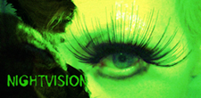

past performanceNIGHTVISION Rob Roth and Marti Domination |
Rob Roth and Marti Domination present an evening of NIGHTVISION at The Wild Project. Marti sings songs of dark glamour with "Beaut" featuring electric guitarist Paul Twinkle, and Rob Roth continues his Wolfboy performance with Cellist Chad Hammer. Roth's Wolfboy is a study in shapeshifting, a developing piece that evokes old shadows by revealing New Wave songs as Requiems. In her self-penned laments, Marti's Beaut dives right to the bottom of the ashtray and crawls back up with a black eye, wrapped in a fishnet glow. NIGHTVISION is an experimental dreamscape that continues their former collaborations in clandestine surveillance. New York City-born director and visual artist Rob Roth's work draws from photography, video, painting and dramaturgy to create experiences that blend media and performance to present a lyrical spectacle. His work has been exhibited at a variety of venues including the New Museum for Contemporary Art, Performance Space122, Abrons Art Center, Galapagos Art Space, and Deitch Projects as well as the Whitney Museum of American Art. Marti Domination is an actress and dancer who has starred in such films as Matthew Barney's "Cremaster 1". She worked extensively with the Blacklips Performance Cult alongside Antony (of Antony and the Johnsons). She has also performed at the Solomon R. Guggenheim Museum, Museum für Gegenwartskunst Basel, and most recently at Participant Gallery in "Dead Flowers". |
upcoming performances |
|||
 |
|||
| EVQ Film Festival 2018 August 20-25 |
|||
performance archives |
|||
| 2018 | 2017 | 2016 | 2015 |
| 2014 | 2013 | 2012 | 2011 |
| 2010 | 2009 | 2008 | 2007 |